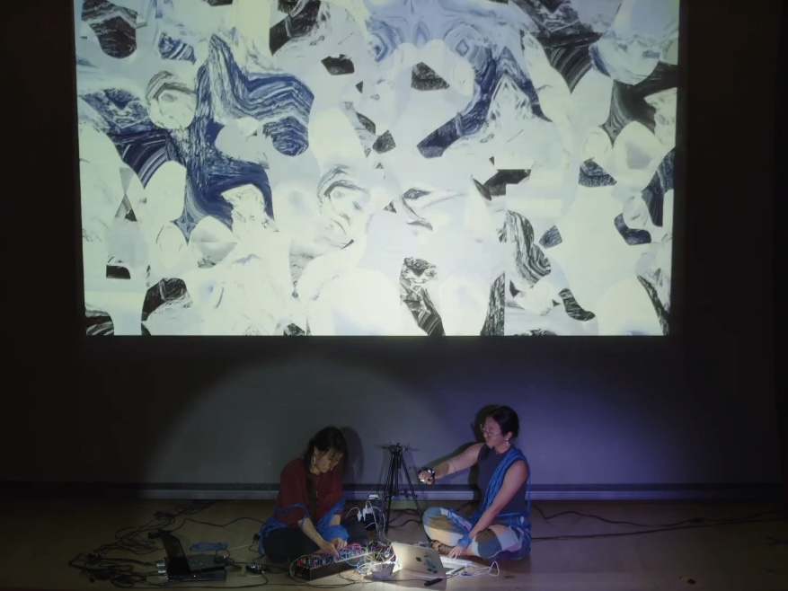
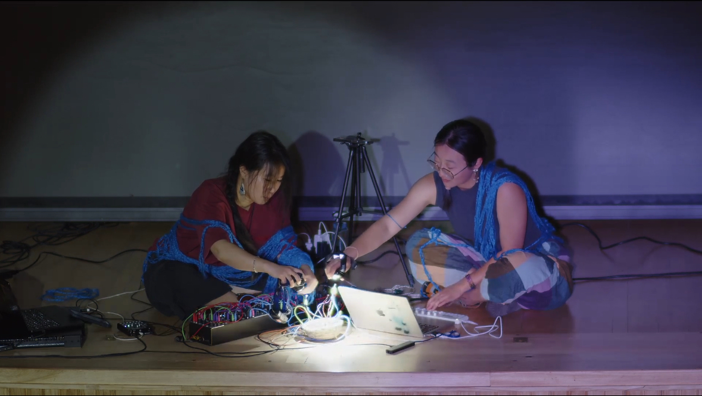
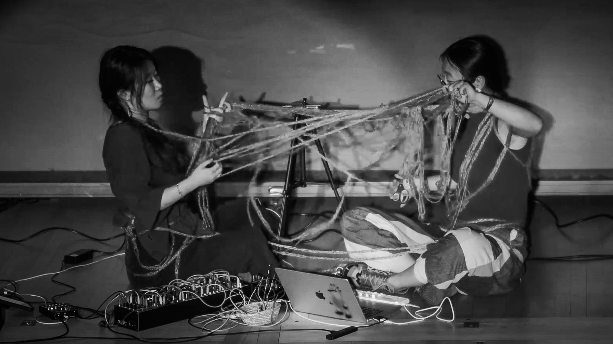
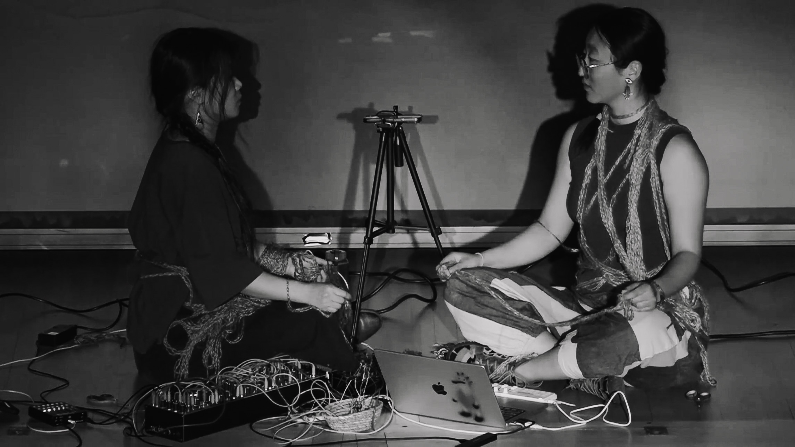
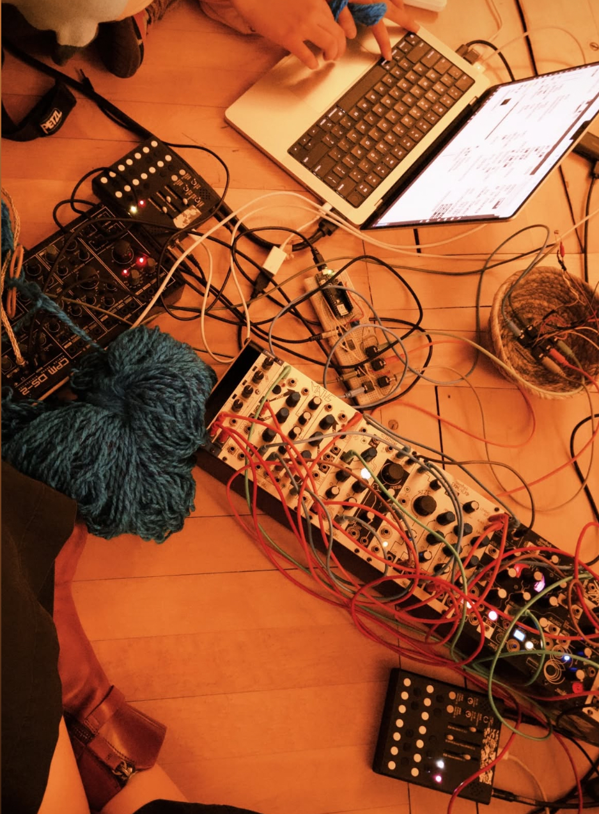
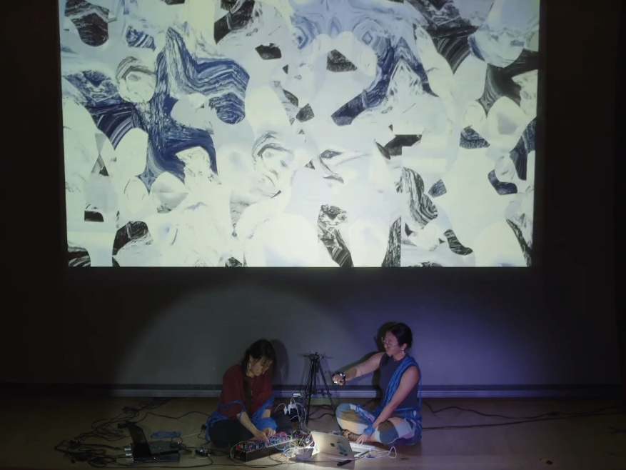
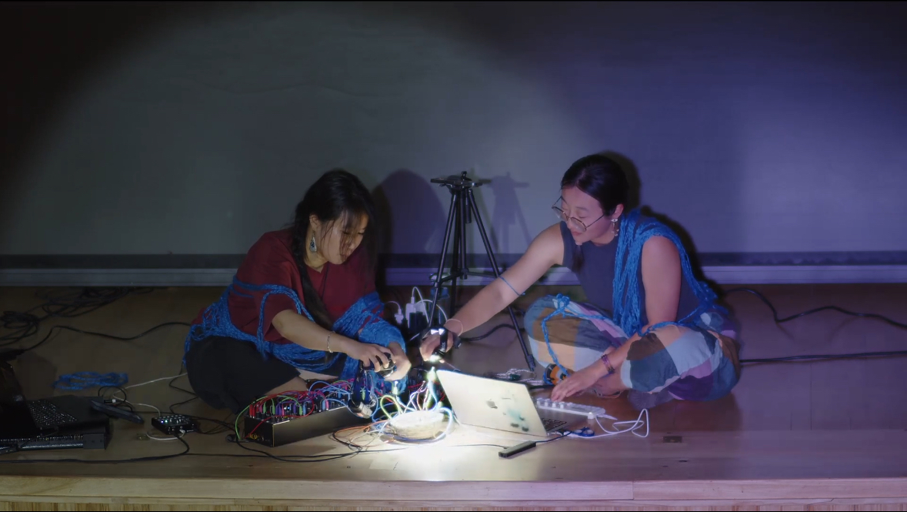
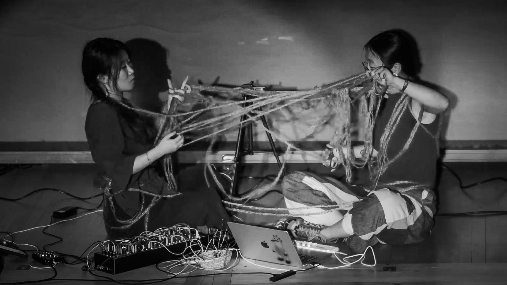
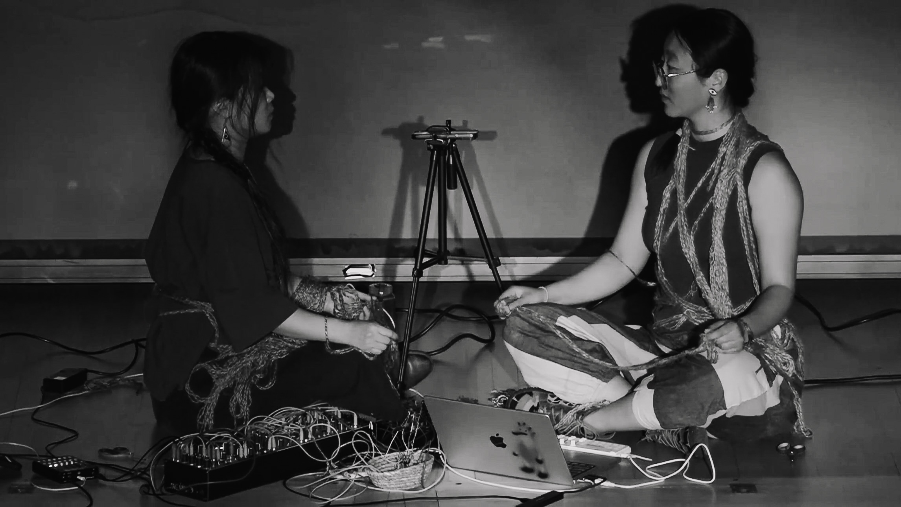
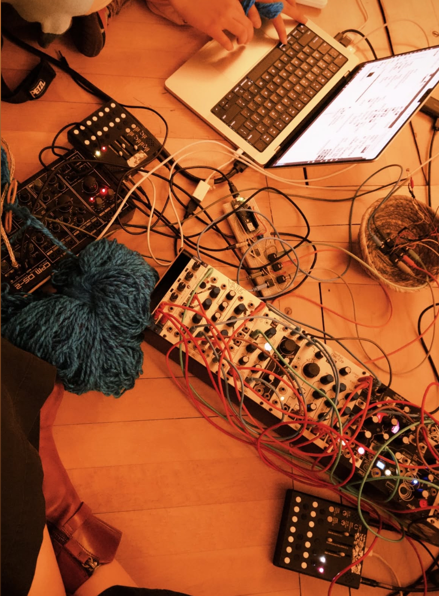

these particles we immersed(2025)
Multimedia live set with DIY sensor instrument, live electronics, real-time visual processing, and performance with yarn. A 50-minute production.
Rocky Mountain College of Art + Design, Visiting Artist Scholar Designer Residency, Denver, Colorado
Excerpt:
Livestream recording: